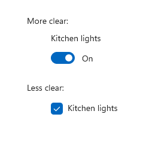

Toggle switches
The toggle switch represents a physical switch that allows users to turn things on or off, like a light switch. Use toggle switch controls to present users with two mutually exclusive options (such as on/off), where choosing an option provides immediate results.
To create a toggle switch control, you use the ToggleSwitch class.
Is this the right control?
Use a toggle switch for binary operations that take effect right after the user flips the toggle switch.


Think of the toggle switch as a physical power switch for a device: you flip it on or off when you want to enable or disable the action performed by the device.
To make the toggle switch easy to understand, label it with one or two words, preferably nouns, that describe the functionality it controls. For example, "WiFi" or "Kitchen lights."
Choosing between toggle switch and check box
For some actions, either a toggle switch or a check box might work. To decide which control would work better, follow these tips:
Use a toggle switch for binary settings when changes become effective immediately after the user changes them.

In this example, it's clear with the toggle switch that the kitchen lights are set to "On." But with the checkbox, the user needs to think about whether the lights are on now or whether they need to check the box to turn the lights on.
Use check boxes for optional ("nice to have") items.
Use a checkbox when the user has to perform extra steps for changes to be effective. For example, if the user must click a "submit" or "next" button to apply changes, use a check box.
Use check boxes when the user can select multiple items that are related to a single setting or feature.
Recommendations
- Use the default On and Off labels when you can; only replace them when it's necessary for the toggle switch to make sense. If you replace them, use a single word that more accurately describes the toggle. In general, if the words "On" and "Off" don't describe the action tied to a toggle switch, you might need a different control.
- Avoid replacing the On and Off labels unless you must; stick with the default labels unless the situation calls for custom ones.
Create a toggle switch
- Important APIs: ToggleSwitch class, IsOn property, Toggled event
The WinUI 3 Gallery app includes interactive examples of most WinUI 3 controls, features, and functionality. Get the app from the Microsoft Store or get the source code on GitHub
Here's how to create a simple toggle switch. This XAML creates the toggle switch shown previously.
<ToggleSwitch x:Name="lightToggle" Header="Kitchen Lights"/>
Here's how to create the same toggle switch in code.
ToggleSwitch lightToggle = new ToggleSwitch();
lightToggle.Header = "Kitchen Lights";
// Add the toggle switch to a parent container in the visual tree.
stackPanel1.Children.Add(lightToggle);
IsOn
The switch can be either on or off. Use the IsOn property to determine the state of the switch. When the switch is used to control the state of another binary property, you can use a binding as shown here.
<StackPanel Orientation="Horizontal">
<ToggleSwitch x:Name="ToggleSwitch1" IsOn="True"/>
<ProgressRing IsActive="{x:Bind ToggleSwitch1.IsOn, Mode=OneWay}"
Width="130"/>
</StackPanel>
Toggled
In other cases, you can handle the Toggled event to respond to changes in the state.
This example shows how to add a Toggled event handler in XAML and in code. The Toggled event is handled to turn a progress ring on or off, and change its visibility.
<ToggleSwitch x:Name="toggleSwitch1" IsOn="True"
Toggled="ToggleSwitch_Toggled"/>
Here's how to create the same toggle switch in code.
// Create a new toggle switch and add a Toggled event handler.
ToggleSwitch toggleSwitch1 = new ToggleSwitch();
toggleSwitch1.Toggled += ToggleSwitch_Toggled;
// Add the toggle switch to a parent container in the visual tree.
stackPanel1.Children.Add(toggleSwitch1);
Here's the handler for the Toggled event.
private void ToggleSwitch_Toggled(object sender, RoutedEventArgs e)
{
ToggleSwitch toggleSwitch = sender as ToggleSwitch;
if (toggleSwitch != null)
{
if (toggleSwitch.IsOn == true)
{
progress1.IsActive = true;
progress1.Visibility = Visibility.Visible;
}
else
{
progress1.IsActive = false;
progress1.Visibility = Visibility.Collapsed;
}
}
}
On/Off labels
By default, the toggle switch includes literal On and Off labels, which are localized automatically. You can replace these labels by setting the OnContent, and OffContent properties.
This example replaces the On/Off labels with Show/Hide labels.
<ToggleSwitch x:Name="imageToggle" Header="Show images"
OffContent="Show" OnContent="Hide"
Toggled="ToggleSwitch_Toggled"/>
You can also use more complex content by setting the OnContentTemplate and OffContentTemplate properties.
UWP and WinUI 2
Important
The information and examples in this article are optimized for apps that use the Windows App SDK and WinUI 3, but are generally applicable to UWP apps that use WinUI 2. See the UWP API reference for platform specific information and examples.
This section contains information you need to use the control in a UWP or WinUI 2 app.
APIs for this control exist in the Windows.UI.Xaml.Controls namespace.
- UWP APIs: ToggleSwitch class, IsOn property, Toggled event
- Open the WinUI 2 Gallery app and see the Slider in action. The WinUI 2 Gallery app includes interactive examples of most WinUI 2 controls, features, and functionality. Get the app from the Microsoft Store or get the source code on GitHub.
We recommend using the latest WinUI 2 to get the most current styles and templates for all controls.